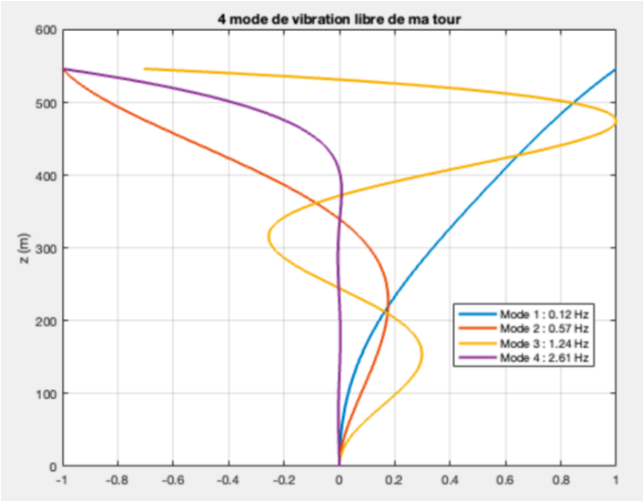
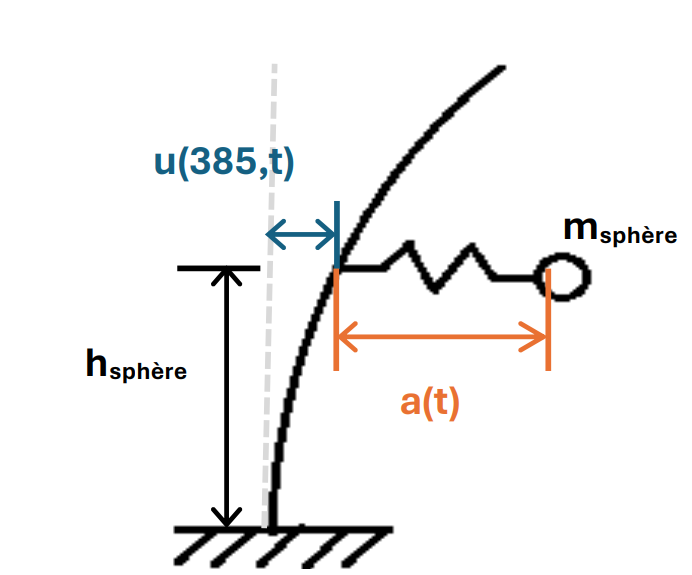
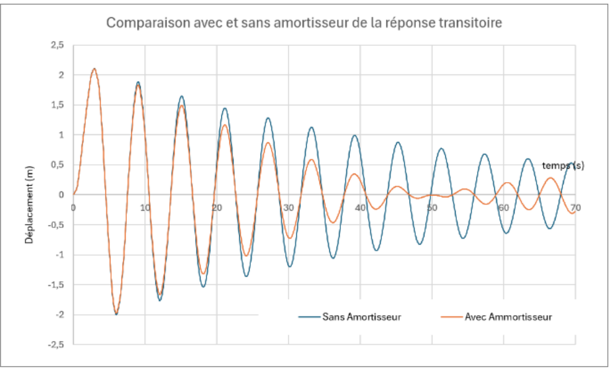

Modéliser la tour Taipei 101
La tour est représentée par une poutre en flexion encastrée à sa base. La méthode de Ritz permet d’approximer son déplacement horizontal avec quatre degrés de liberté.
MQ19 · UTC · 2026 / PROJECT
Modélisation des vibrations de flexion d’une tour et étude de l’effet d’un absorbeur passif.
DÉMARCHE & RÉSULTATS
Étude de la dynamique de Taipei 101 par la méthode de Ritz : calcul des modes propres, puis analyse du couplage entre la tour et son absorbeur passif de vibrations.
La tour est représentée par une poutre en flexion encastrée à sa base. La méthode de Ritz permet d’approximer son déplacement horizontal avec quatre degrés de liberté.

À partir des énergies cinétique et de déformation, les matrices de masse et de raideur sont construites. Le modèle initial donne quatre fréquences propres : 0,12 ; 0,57 ; 1,24 et 2,61 Hz.

Une masse suspendue de 660 tonnes, située au 88ᵉ étage, est ajoutée au modèle par un cinquième degré de liberté. L’analyse met en évidence un couplage dynamique et un dédoublement de la première fréquence propre autour de 0,12 Hz.

Le modèle éléments finis sous Abaqus permet d’étudier les vibrations de la tour, l’effet d’une rafale de vent et la réponse sismique à l’enregistrement El Centro. L’absorbeur réduit notamment le déplacement maximal simulé sous séisme de 1,06 m à 0,97 m (−8,5 %).
En complément de l’analyse modale par la méthode de Ritz, j’ai construit un modèle numérique de la tour dans Abaqus afin de simuler sa réponse à des sollicitations sismiques. Cette approche par éléments finis permet d’étudier le comportement dynamique de la structure lors d’un tremblement de terre.